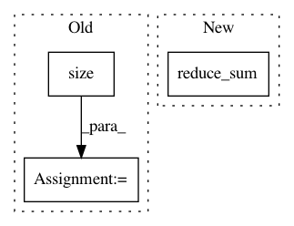

946c74ea83f93967e28c585d0bbcd17afbfebb13,niftynet/layer/loss_segmentation.py,,cross_entropy,#Any#Any#Any#,267
Before Change
entropy = tf.nn.sparse_softmax_cross_entropy_with_logits(
logits=prediction, labels=ground_truth)
if weight_map is not None:
weight_map = tf.cast(tf.size(entropy), dtype=tf.float32) / \
tf.reduce_sum(weight_map) * weight_map
entropy = tf.multiply(entropy, weight_map)
return tf.reduce_mean(entropy)
def cross_entropy_dense(prediction, ground_truth, weight_map=None):
After Change
return tf.reduce_mean(entropy)
weight_sum = tf.maximum(tf.reduce_sum(weight_map), 1e-6)
return tf.reduce_sum(entropy * weight_map / weight_sum)
def cross_entropy_dense(prediction, ground_truth, weight_map=None):
if weight_map is not None:
In pattern: SUPERPATTERN
Frequency: 3
Non-data size: 3
Instances
Project Name: NifTK/NiftyNet
Commit Name: 946c74ea83f93967e28c585d0bbcd17afbfebb13
Time: 2018-05-05
Author: wenqi.li@ucl.ac.uk
File Name: niftynet/layer/loss_segmentation.py
Class Name:
Method Name: cross_entropy
Project Name: OpenNMT/OpenNMT-tf
Commit Name: 4d49910b3f0696102f813fb5ba451b934a4a579c
Time: 2021-03-25
Author: guillaumekln@users.noreply.github.com
File Name: opennmt/utils/losses.py
Class Name:
Method Name: cross_entropy_sequence_loss
Project Name: dpressel/mead-baseline
Commit Name: b86c4b10a1ddf9369db260d1a599670e844795b2
Time: 2018-11-02
Author: dpressel@gmail.com
File Name: python/baseline/tf/lm/model.py
Class Name: LanguageModelBase
Method Name: create_loss